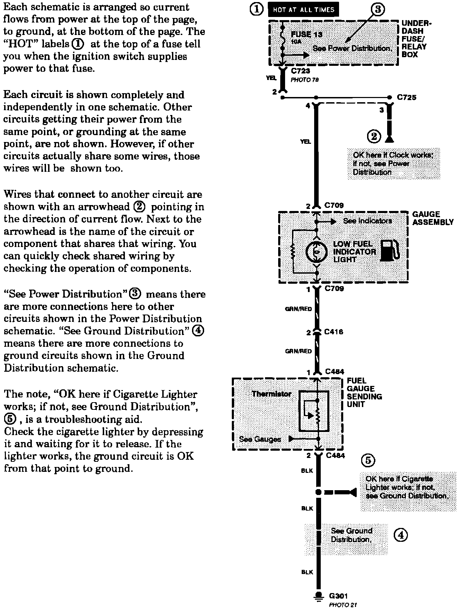

Operation CHARM
: Car repair manuals for everyone.
Home
>>
Acura
>>
1992
>>
Integra L4-1834cc 1.8L DOHC FI
>>
Repair and Diagnosis
>>
Transmission and Drivetrain
>>
Transmission Control Systems
>>
Relays and Modules - Transmission and Drivetrain
>>
Relays and Modules - A/T
>>
Control Module
>>
Diagrams
>>
Diagram Information and Instructions
>>
Key to Electrical Diagrams
>>
Circuit Schematics
Circuit Schematics
Circuit Schematics:
